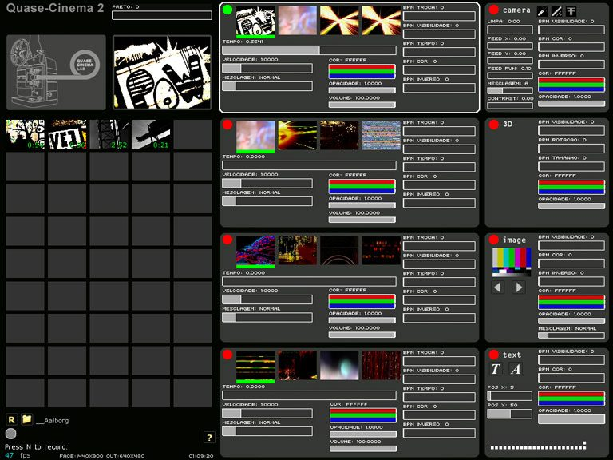

Software, projeção e sistemas interativosSoftware, projection and interactive systems
Uma seleção de 14 destaques de Alexandre Rangel e do Quase-Cinema Lab, de 2007 até hoje. Em cada uma, escrita, código e imagem são pensados juntos: o software é parte da obra, não só o meio.A selection of 14 highlights by Alexandre Rangel and Quase-Cinema Lab, from 2007 to today. In each one, writing, code and image are conceived together: the software is part of the work, not just the medium.

Software livreFree software · 2007
Quase-Cinema VJ software
Software livre de vídeo ao vivo (TCC UnB; Quase-Cinema 2 Funarte 2008; CNN 2009). A ferramenta que deu nome ao lab.Free live video software (UnB thesis project; Quase-Cinema 2 Funarte 2008; CNN 2009). The tool that gave the lab its name.
Video mapping interativoInteractive video mapping · desde 2019since 2019
Esculturas QuânticasQuantum Sculptures
Video mapping interativo; versão recente em cables.gl. Museu Nacional da República (Brasília Mapping Festival 2019) e fachada LED Fiesp / Galeria SESI.Interactive video mapping; latest version in cables.gl. Museu Nacional da República (Brasília Mapping Festival 2019) and the Fiesp LED façade / Galeria SESI.
Software interativo em que o público toca a cidade como uma partitura. Museu Nacional da República.Interactive software that lets the audience play the city like a musical score. Museu Nacional da República.
Obra audiovisual com Joana Mostafa e Will Lopes: corpo, máquina e modelos generativos em intimidade.Audiovisual work with Joana Mostafa and Will Lopes: body, machine and generative models in intimacy.
App de tarô da Quase-Cinema Lab, com cartas ilustradas, animação e música generativa.Tarot app by Quase-Cinema Lab, with illustrated cards, animation and generative music.
Performance compartilhada entre plantas e humanos, mediada por eletrônica e software.Shared performance between plants and humans, mediated by electronics and software.
Visualidade espelhada na interseção entre inteligência artificial e programação criativa com Strudel.Mirrored visuality at the intersection of artificial intelligence and creative programming with Strudel.